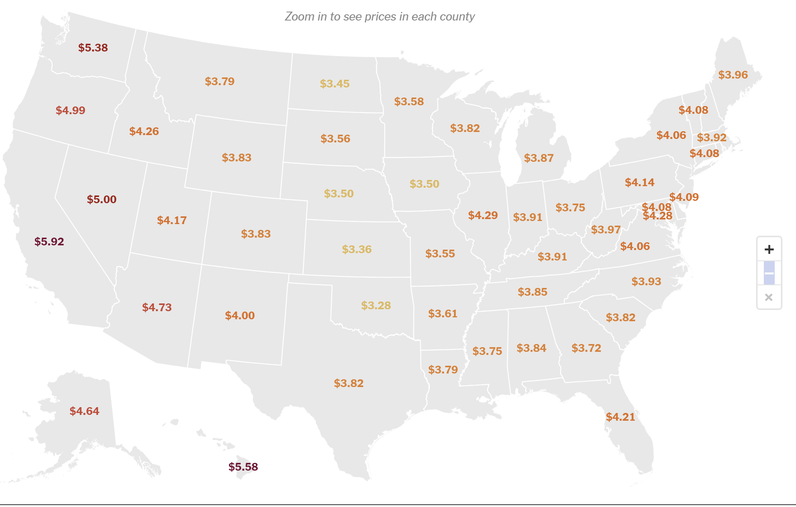
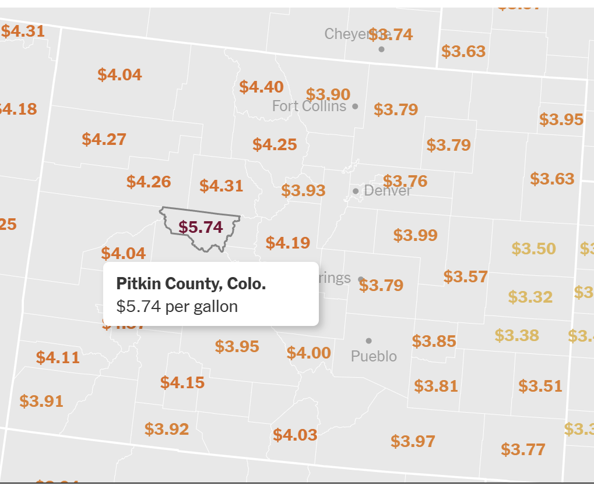

The authors of this visualization created the visualization to demonstrate the impact of the conflict in Iran has impacted oil supplies from the Midddle East to the United States. The United States is not the net exporter of petroleum products, so the country needs to import millions of barrels of petroleum from other countries.
The data for this visualization is sourced from AAA, the American Automobile Association, which collects and reports on gas prices across the United States. The data is updated regularly to reflect current gas prices in different states and regions. The visualization likely uses this data to create an interactive map or chart that allows users to see how gas prices vary across the country, especially in light of recent geopolitical events that have impacted oil prices globally.
The targeted audience for this visualization are general residents of the United States, specifically those who rely on gasoline for transportation. This could include commuters or drivers. With the conflict between Iran and Israel, plus the interference from the U.S., the price of oil has been rising, which has led to a concerning increase in gas prices. This visualization provides a clear and interactive way for people to understand how gas prices have changed and differentiate across different states,
The visualization can answer the following questions: "How have gas prices changed across different states in the U.S.?", "How do they vary across state counties?" To provide an example, you can see in the picture below that California, Hawaii, and Washington have the most expensive gas prices, while Oklahoma and Kansas have the lowest.

For counties, looking at Colorado, PitKin County has the most expensive gas prices.
The visualization is a chloropleth map of the United States where the user can hover their mouse over different states or their counties to see current gas prices per gallon. Users need to zoom in on the states to view the counties and their gas prices. The prices are also visible with a warm color range to ease the access of info to the user on gas expenses. Users can zoom using the scroll wheel or manually using the plus/minus buttons. This is demonstrated in the video above.
The main limitation is the minimal interaction and lack of detailed information provided in the visualization. While it effectively shows the variation in gas prices across different states, it does show more than that. A personal suggestion would be for the visualization to provide historical data or trends over time, which could help users understand how gas prices have evolved in response to various events. This lack of context and interactivity may limit the user's ability to fully grasp the complexities of gas price fluctuations.